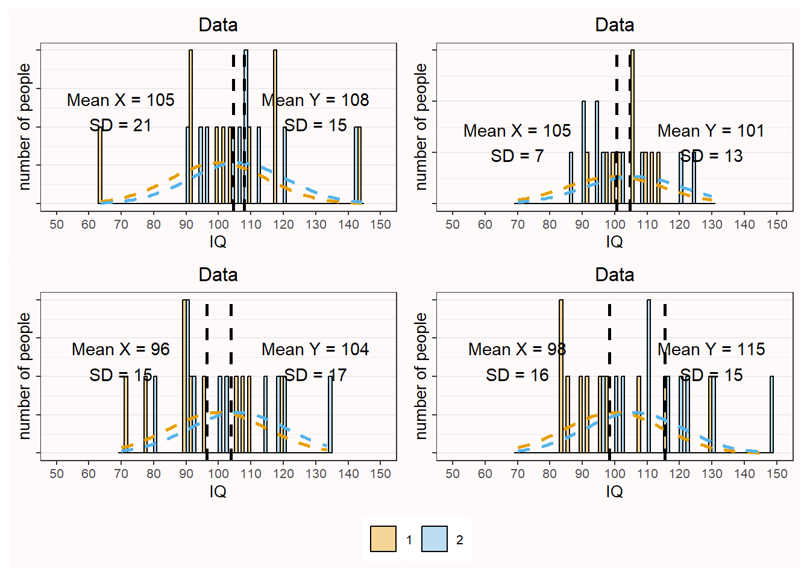

Every single study is just a data-point in a future meta-analysis. If you draw small samples from a population, the mean and standard deviation in the sample can differ considerably from the mean and standard deviation in the population. There is great variability in small samples. Parameter estimates from small samples are very imprecise, and therefore the 95% confidence intervals around effect sizes are very wide. Indeed, this led Cohen (1994) to write “I suspect that the main reason [confidence intervals] are not reported is that they are so embarrassingly large!” If we want a more precise estimate of our parameter of interest, such as the mean difference or correlation in the population, we need either run extremely large single studies, or alternatively, combine data from several studies by performing a meta-analysis. The most common approach to combine studies is to perform a meta-analysis of effect size estimates.
You can perform a meta-analysis for a set of studies in a single article you plan to publish (often called an internal meta-analysis), or you can search the literature for multiple studies reported in as many different articles as possible, and perform a meta-analysis on all studies others have published. An excellent introduction to meta-analyses is provided in the book by Borenstein (2009). There is commercial software you can use to perform meta-analyses, but I highly recommend against using such software. Almost all commercial software packages lack transparency, and do not allow you to share your analysis code and data with other researchers. In this chapter, we will be using R to perform a meta-analysis of effect sizes, using the metafor package by Viechtbauer (2010). An important benefit of using metafor is that your meta-analysis can be made completely reproducible. If you plan to perform a narrative review, it is relatively little additional effort to also code the effect sizes and sample size, and perform an effect size meta-analysis, and to code the statistical tests and p-values, to perform a p-curve or z-curve analysis (which will be discussed in the next chapter on bias detection).
11.1 Random Variation
People find it difficult to think about random variation. Our mind is more strongly geared towards recognizing patterns than randomness. In this section, the goal is to learn what random variation looks like, and how the number of observations collected determines the amount of variation.
Intelligence tests have been designed such that the mean Intelligence Quotient of the entire population of adults is 100, with a standard deviation of 15. This will not be true for every sample we draw from the population. Let’s get a feel for what the IQ scores from a sample look like. Which IQ scores will people in our sample have?
We will start by manually calculating the mean and standard deviation of a random sample of 10 individuals. Their IQ scores are: 91.15, 86.52, 75.64, 115.72, 95.83, 105.44, 87.10, 100.81, 82.63, and 106.22. If we sum these 10 scores and divide them by 10, we get the mean of our sample: 94.71. We can also calculate the standard deviation from our sample. First, we subtract the overall mean (94.71) from each individual IQ score. Then, we square these differences and then sum these squared differences (giving 1374.79). We divide this sum of the squared difference by the sample size minus 1 (10-1=9), and finally take the square root of this value, which gives the standard deviation: 12.36. Copy the code below, remove the set.seed(3190) line (which makes the code reproducible but creates the same data as in the plot below each time) and run it to randomly simulate 10 IQ scores and plot them.
library(ggplot2)set.seed(3190) # set seed for reproducibilityn <-10# set sample sizex <-rnorm(n = n, mean =100, sd =15) # simulate data# plot data adding normal distribution and annotationsggplot(as.data.frame(x), aes(x)) +geom_histogram(colour ="black", fill ="grey", aes(y = ..density..), binwidth =2) +stat_function(fun = dnorm, args =c(mean =100, sd =15), size =1, color ="red", lty =2) +xlab("IQ") +ylab("number of people") +theme_bw(base_size =20) +geom_vline(xintercept =mean(x), colour ="gray20", linetype ="dashed") +coord_cartesian(xlim =c(50, 150)) +scale_x_continuous(breaks =seq(50, 150, 10)) +annotate("text", x =mean(x), y =0.02, label =paste("Mean = ", round(mean(x)), "\n", "SD = ", round(sd(x)), sep =""), size =8) +theme(plot.background =element_rect(fill ="#fffafa")) +theme(panel.background =element_rect(fill ="#fffafa"))
Warning: Using `size` aesthetic for lines was deprecated in ggplot2 3.4.0.
ℹ Please use `linewidth` instead.
Warning: The dot-dot notation (`..density..`) was deprecated in ggplot2 3.4.0.
ℹ Please use `after_stat(density)` instead.
Figure 11.1: Simulation of 10 random datapoints with mean = 100 and sd = 15 in the population.
The plot above provides one example of a randomly simulated dataset of 10 points drawn from a normal distribution with a mean of 100 and a standard deviation of 15. The grey bars indicate the frequency with which each IQ score was observed. The red dotted line illustrates the normal distribution based on the mean and sd of the population. Both the observed mean (97; thin vertical dashed line), as well as the observed standard deviation (14), differ from the true population values. If we simulate 4 additional datasets, we see both the mean and the standard deviation vary.
Imagine we did not yet know what the mean IQ was in our population (where M = 100), or the standard deviation (where SD = 15), and that we would only have access to one dataset. Our estimate might be rather far off. This type of variation is to be expected in small samples of 10 participants, given the true standard deviation. The variability in the mean is determined by the standard deviation of the measurement. In real life, the standard deviation can be reduced by for example using multiple and reliable measurements (which is why an IQ test has not just one question, but many different questions). But we can also make sure our sample mean is closer to the population mean by increasing the sample size.
A new simulated sample with 100 participants is plotted below. We are slowly seeing what is known as the normal distribution (and the frequency scores start to resemble the red dotted line illustrating the normal distribution of the population). This is the well-known bell shaped curve that represents the distribution of many variables in scientific research (although some other types of distributions are quite common as well). The mean and standard deviation are much closer to the true mean and standard deviation, and this is true for most of the simulated samples if you set n <- 100 in the code above and run additional simulations.
Figure 11.2: 100 random datapoints with mean = 100 and sd = 15 in the population.
If we simulate a really large sample of 1000 observations, we will see the benefits of collecting a large sample size in terms of accuracy of the measurement. Not every simulated study of 1000 people will yield the true mean and standard deviation, but it will happen quite often. And note how although the distribution is very close to a normal distribution, even with 1000 people it is not perfect.
Figure 11.3: 1000 random datapoints with mean = 100 and sd = 15 in the population.
So far, we have simulated only a single group of observations, but it is also informative to examine the variation we will observe when we compare the means in two independent groups. Assume we have a new IQ training program that will increase people’s IQ score by 6 points. People in condition 1 are in the control condition – they do not get IQ training. People in condition 2 get IQ training. Let’s simulate 10 people in each group, assuming mean IQ in the control condition is 100 and in the experimental group is 106 (the SD is still 15 in each group).
Figure 11.4: Simulation of 10 observations in two independent groups.
The two groups differ in how close they are to their true means, and as a consequence, the difference between groups varies as well. Note that this difference is the main variable in statistical analyses when comparing two groups in for example a t-test. In this specific simulation, we got quite extreme results, with a score of 96 (when the population mean is 100) and a score of 111 (when the population mean is 106). So in this sample, due to random variation, we calculate an effect size estimate that is quite a bit larger than the true effect size. Let’s simulate 4 additional datasets to see the variation.

Figure 11.5: Four simulated samples of independent groups.
We see that there is quite some variation, up to the point that in one simulation the sample means are in the opposite direction of the population means. Again, increasing the sample size will mean that, in the long run, the sample means will get closer to the population means, and that we are more accurately estimating the difference between conditions. With 250 observations in each group, a randomly simulated set of observations for the two groups might look like Figure 11.6. Note that this difference might not look impressive. However, the difference would pass a significance test (an independent t-test) with a very low alpha level.
Figure 11.6: Simulated sample of 250 independent observations.
The variation in the estimate of the mean decreases as the sample size increases. The larger the sample size, the more precise the estimate of the mean becomes. The standard deviation of the sample (\(\sigma_x\)) of single IQ scores is 15, irrespective of the sample size, and the larger the sample size, the more accurately we can measure the true standard deviation. But the standard deviation of the sampling distribution of the sample mean (\(\sigma_{\overline{x}}\)) decreases, as the sample size increases, and is referred to as the standard error (SE). The estimated standard deviation of the sample mean, or the standard error, calculated based on the observed standard deviation of the sample (\(\sigma_x\)) is:
\[SE = \sigma_{\overline{x}} = \frac{\sigma_x}{\sqrt{n}}\] Based on this formula, and assuming an observed standard deviation of the sample of 15, the standard error of the mean is 4.74 for a sample size of 10, and 0.95 for a sample size of 250. Because estimates with a lower standard error are more precise, the effect size estimates in a meta-analysis are weighed based on the standard error, with the more precise estimates getting more weight.
So far we have seen random variation in means, but correlations will show similar variation as a function of the sample size. We will continue with our example of measuring IQ scores, but now we search for fraternal (so not identical) twins, and measure their IQ. Estimates from the literature suggest the true correlation of IQ scores between fraternal twins is around r = 0.55. We find 30 fraternal twins, measure their IQ scores, and plot the relation between the IQ of both individuals. In this simulation, we assume all twins have a mean IQ of 100 with a standard deviation of 15.
The correlation is calculated based on the IQ scores of one fraternal twin (x) and the IQ scores of the other fraternal twin (y) for each pair of twins, and the total number of pairs (N). In the numerator of the formula, the number of pairs is multiplied by the sum of the product of x and y, and from this value the sum of x multiplied by the sum of y is subtracted. In the denominator, the square root is taken from the number of pairs multiplied by the sum of x squared, from which the sum of x, which is then squared, is subtracted, and multiplied by the same calculation but now for y.
\[r=\frac{n \Sigma x y-(\Sigma x )(\Sigma y)}{\sqrt{[n \Sigma x^{2}-(\Sigma x)^{2}][n \Sigma y^{2}-(\Sigma y)^{2}]}}\] When we randomly simulate observations for 30 twins, we get the following result.
Figure 11.7: Correlation based on 30 pairs.
On the x-axis, we see the IQ score of one twin, and on the y-axis we see the IQ score of the second twin, for each pair. The black dotted diagonal line illustrates the true correlation (0.55), while the yellow line shows the observed correlation (in this case, r = 0.43). The slope of the yellow line is determined by the observed correlation, but the position of the line is influenced by the mean IQ scores in both groups (in this simulation, the mean on the y-axis is 105, somewhat above 100, and the mean on the x-axis is 102, also slightly above 100. The blue area is the 95% confidence interval around the observed correlation. As we saw in the chapter on confidence intervals, 95% of the time (in the long run) the blue area will contain the true correlation (the dotted black line). As in the examples based on means, increasing the sample size to 300 narrows the confidence interval considerably, and will mean that most of the time the correlation in the sample is much closer to the correlation in the population. As the sample size increases, the estimate of the correlation becomes more precise, following the formula of the standard error of a correlation:
Because estimates of means, standard deviations, or correlations based on small samples have relatively large uncertainty, it is preferable to collect larger samples. However, this is not always possible, and often the goal of a study is not to provide an accurate estimate, but to test a hypothesis. A study often requires less observations to achieve sufficient power for a hypothesis test, than are required to be able to accurately estimate a parameter (Maxwell et al., 2008). Therefore, scientists often rely on meta-analyses, where data from multiple studies are combined, to provide accurate estimates.
11.2 A single study meta-analysis
Let’s first begin with something you will hardly ever do in real life: a meta-analysis of a single study. This is a little silly, because a simple t-test or correlation will tell you the same thing – but it is educational to compare a t-test with a meta-analysis of a single study, before we look at how multiple studies are combined into a meta-analysis.
A difference between an independent t-test and a meta-analysis is that a t-test is performed on the raw data, while a meta-analysis is typically performed on the effect size(s) of individual studies. The metafor R package contains a very useful function called escalc that can be used to calculate effect sizes, their variances, and confidence intervals around effect size estimates. So let’s start by calculating the effect size to enter into our meta-analysis. As explained in the chapter on effect sizes the two main effect sizes used for meta-analyses of continuous variables are the standardized mean difference (d) or the correlation (r), although it is of course also possible to perform meta-analyses on dichotomous variables (we will see an example below). The code below will calculate the standardized mean difference (SMD) from two independent groups from means (specified by m1i and m2i), standard deviations (sd1i and sd2i), and the number of observations in each group (n1i and n2i). By default, metafor computes the effect size ‘Hedges’ g’ which is the unbiased version of Cohen’s d (see the section on Cohen’s d in the chapter on Effect Sizes).
library(metafor)g <-escalc(measure ="SMD",n1i =50, # sample size in Group 1m1i =5.6, # observed mean in Group 1sd1i =1.2, # observed standard deviation in Group 1n2i =50, # sample size in Group 2m2i =4.9, # observed mean in Group 2sd2i =1.3) # observed standard deviation in Group 2g
yi
vi
0.5552575
0.0415416
The output gives you Hedge’s g (under the yi column, which always returns the effect size, in this case the standardized mean difference) and the variance of the effect size estimate (under vi). As explained in Borenstein (2009) formula 4.18 to 4.24 the standardized mean difference Hedges’ g is calculated by dividing the difference between means by the pooled standard deviation, multiplied by a correction factor, J:
The variance of the standardized mean difference depends only on the sample size (n1 and n2) and the value of the standardized mean difference itself. To perform the required calculations for a meta-analysis, you need the effect sizes and their variance. This means that if you have coded the effect sizes and the sample sizes (per group) from studies in the literature, you have the information you need to perform a meta-analysis. You do not need to manually calculate the effect size and its variance using the two formula above – the escalc function does this for you. We can now easily perform a single study meta-analysis using the rma function in the metafor package:
meta_res <-rma(yi, vi, data = g)meta_res
Random-Effects Model (k = 1; tau^2 estimator: REML)
tau^2 (estimated amount of total heterogeneity): 0
tau (square root of estimated tau^2 value): 0
I^2 (total heterogeneity / total variability): 0.00%
H^2 (total variability / sampling variability): 1.00
Test for Heterogeneity:
Q(df = 0) = 0.0000, p-val = 1.0000
Model Results:
estimate se zval pval ci.lb ci.ub
0.5553 0.2038 2.7243 0.0064 0.1558 0.9547 **
---
Signif. codes: 0 '***' 0.001 '**' 0.01 '*' 0.05 '.' 0.1 ' ' 1
Under ‘Model Results’ we find the effect size Hedges’ g (0.56) and the standard error (0.2), the Z-test statistic testing the mean difference against the null-hypothesis (2.72), and the 95% confidence interval [ci.lb = 0.16; ci.ub = 0.95] around the effect size (the interval width can be specified using the ‘level =’ option). We also see the p-value for the test of the meta-analytic effect size against 0. In this case we can reject the null-hypothesis (p = 0.006).
In a meta-analysis, a Z-test is used to examine whether the null-hypothesis can be rejected. This assumes a normally distributed random effect size model. Normally, you would analyze data from a single study with two groups using a t-test, which not surprisingly uses a t-distribution. I don’t know why statistical computations sometimes care a lot about a small amount of bias (the difference between the effect size d and g, for example) and sometimes not (the difference between Z and t), but meta-analysts seem happy with Z-scores (in fact, with large enough sample sizes (which is commonly true in a meta-analysis) the difference between a Z-test and t-test is tiny). If we directly compare a single-study meta-analysis based on a Z-test with a t-test, we will see some tiny differences in the results.
As explained in the chapter on effect sizes we can directly calculate the effect size Hedges’ g (and it’s 95% confidence interval) using MOTE (Buchanan et al., 2017). The MOTE package uses the t-distribution when calculating confidence intervals around the effect size (and we can see this makes only a tiny difference compared to using the Z-distribution in a meta-analysis with 50 observations in each group).
The t-value is 2.835, and the p-value is 0.006. The results are very similar to those computed when performing a meta-analysis, with g = 0.55, 95% CI[0.16; 0.94], where the effect size and the upper bound for the confidence interval differ only 0.01 after rounding.
It is now common to visualize the results of a meta-analysis using a forest plot. According to Cooper et al. (2009) the first forest plot was published in 1978 (Freiman et al., 1978), with the goal to visualize a large set of studies that had concluded the absence of an effect based on non-significant results in small studies (see Figure 11.9). By plotting the width of the confidence interval for each study, it becomes possible to see that even though the studies do not reject an effect size of 0, and thus were all non-significant, many studies also did not reject the presence of a meaningful favorable treatment effect. To make large studies more noticeable in a forest plot, later versions added a square to indicate the estimated effect size, where the size of the square was proportional to the weight that will be assigned to the study when computing the combined effect.
Figure 11.9: First version of a forest plot by Freiman and colleagues, 1978 (image from https://www.jameslindlibrary.org/freiman-ja-chalmers-tc-smith-h-kuebler-rr-1978/).
In Figure 11.10 we see a modern version of a forest plot, with the effect size for Study 1 marked by the black square at 0.56, and the confidence interval visualized by lines extending to 0.16 on the left and 0.95 on the right. The numbers printed on the right-hand side of the forest plot provide the exact values for the effect size estimate and the lower and upper bound of the confidence interval. On the lower half of the forest plot, we see a stretched-out diamond, in a row labeled ‘RE Model’, for ‘Random Effects model’. The diamond summarizes the meta-analytic effect size estimate, being centered on that effect size estimate with the left and right endpoints at the 95% confidence interval of the estimate. Because we only have a single study, the meta-analytic effect size estimate is the same as the effect size estimate for our single study.
Figure 11.10: Forest plot for a single study.
11.3 Simulating meta-analyses of mean standardized differences
Meta-analyses get a bit more exciting when we are using them to analyze results from multiple studies. When multiple studies are combined in a meta-analysis, effect size estimates are not simply averaged, but they are weighed by the precision of the effect size estimate, which is determined by standard error, which is in turn determined by the sample size of the study. Thus, the larger the sample size of an individual study, the more weight it gets in the meta-analysis, meaning that it has more influence on the meta-analytic effect size estimate.
One intuitive way to learn about meta-analyses is to simulate studies and meta-analyze them. The code below simulates 12 studies. There is a true effect in the simulated studies, as the difference in means in the population is 0.4 (and given the standard deviation of 1, Cohen’s d = 0.4 as well). The studies vary in their sample size between 30 observations and 100 observations per condition. The meta-analysis is performed, and a forest plot is created.
set.seed(94)nSims <-12# number of simulated studiesm1 <-0.4# population mean Group 1sd1 <-1# standard deviation Group 1m2 <-0# population mean Group 2sd2 <-1# standard deviation Group 1metadata <-data.frame(yi =numeric(0), vi =numeric(0)) # create dataframefor (i in1:nSims) { # for each simulated study n <-sample(30:100, 1) # pick a sample size per group x <-rnorm(n = n, mean = m1, sd = sd1) y <-rnorm(n = n, mean = m2, sd = sd2) metadata[i,1:2] <- metafor::escalc(n1i = n, n2i = n, m1i =mean(x), m2i =mean(y), sd1i =sd(x), sd2i =sd(y), measure ="SMD")}result <- metafor::rma(yi, vi, data = metadata, method ="FE")par(bg ="#fffafa")metafor::forest(result)
Figure 11.11: Forest plot for 12 simulated studies.
We see 12 rows, one for each study, each with their own effect size and confidence interval. If you look closely, you can see the squares that indicate the effect size estimate for each study differ in size. The larger the sample size, the bigger the square. Study 5 had a relatively small sample size, which can be seen by both the small square and the relatively wide confidence interval. Study 9 had a larger sample size, and thus a slightly larger square and narrower confidence interval. At the bottom of the graph we find the meta-analytic effect size and its confidence interval, both visualized by a diamond and numerically. The model is referred to as an FE Model, or Fixed Effect (FE) model. The alternative approach is an RE Model, or Random Effects (RE) model (the difference is discussed below).
You might notice that the first two studies in the meta-analysis were not statistically significant. Take a moment to think for yourself if you would have continued this research line, after not finding an effect twice in a row. If you feel like it, run the code above several times (remove the set.seed argued used to make the simulation reproducible first, or you will get the same result each time) and see how often this happens with a population effect size and range of sample sizes in this simulation. As should be clear from discussion of mixed results in the chapter on likelihoods, it is important to think meta-analytically. In the long run, there will be situations where you will find one or two non-significant results early in a research line, even when there is a true effect.
Let’s also look at the statistical results of the meta-analysis, which is a bit more interesting now that we have 12 studies:
Fixed-Effects Model (k = 12)
I^2 (total heterogeneity / total variability): 0.00%
H^2 (total variability / sampling variability): 0.25
Test for Heterogeneity:
Q(df = 11) = 2.7368, p-val = 0.9938
Model Results:
estimate se zval pval ci.lb ci.ub
0.4038 0.0538 7.5015 <.0001 0.2983 0.5093 ***
---
Signif. codes: 0 '***' 0.001 '**' 0.01 '*' 0.05 '.' 0.1 ' ' 1
We see a test for heterogeneity, a topic we will return to below. We see the model results, which in this specific simulation yielded a meta-analytic effect size estimate of 0.4. The confidence interval around the effect size estimate [0.3 ; 0.51] is much narrower than we saw before for a single study. This is because the 12 studies we simulated together have quite a large sample size, and the larger the sample size, the smaller the standard error, and thus the narrower the confidence interval is. The meta-analytic effect size estimate is statistically different from 0 (p < 0.0001) so we can reject the null hypothesis even if we use a stringent alpha level, such as 0.001. Note that, as discussed in the chapter on sample size justification and in line with the section on justifying error rates in the chapter on error control, it seems sensible to use a much lower alpha level than 5% in meta-analyses. It is possible to set the alpha level in metafor, e.g. using level = 0.999 (for an alpha level of 0.001), but this adjusts all confidence intervals, including those of the individual studies, which will mostly have used an alpha level of 0.05, so it is easier to just manually check if the test is significant at your chosen alpha level (e.g., 0.001).
11.4 Fixed Effect vs Random Effects
There are two possible models when performing a meta-analysis. One model, known as a fixed effect model, assumes there is one effect size that generates the data in all studies in the meta-analysis. This model assumes there is no variation between individual studies – all have exactly the same true effect size. The author of the metafor package we used in this chapter prefers to use the term equal-effects model instead of fixed effect model. The perfect example of this is the simulations we have done so far. We specified a single true effect in the population, and generated random samples from this population effect.
Alternatively, one can use a model where the true effect differs in some way in each individual study. We don’t have a single true effect in the population, but a range of randomly distributed true effect sizes (hence the ‘random effects’ model). Studies differs in some way from each other (or some sets of studies differ from other sets), and their true effect sizes differ as well. Note the difference between a fixed effect model, and a random effects model, in that the plural ‘effects’ is used only in the latter. Borenstein et al (2009) state there are two reasons to use a fixed effect model: When all studies are functionally equivalent, and when your goal is not to generalize to other populations. This makes the random effects model generally the better choice, although some people have raised the concern that random-effects models give more weight to smaller studies, which can be more biased. By default, metafor will use a random effects model. We used the method="FE" command to explicitly ask for a fixed effect model. In the meta-analyses that we will simulate in the rest of this chapter, we will leave out this command and simulate random effects meta-analyses, as this is the better choice in many real life meta-analyses.
11.5 Simulating meta-analyses for dichotomous outcomes
Although meta-analyses on mean differences are very common, a meta-analysis can be performed on different effect sizes measures. To show a slightly less common example, let’s simulate a meta-analysis based on odds ratios. Sometimes the main outcome in an experiment is a dichotomous variable, such as the success or failure on a task. In such study designs we can calculate risk ratios, odds ratios, or risk differences as the effect size measure. Risk differences are sometimes judged easiest to interpret, but odds ratios are most often used for a meta-analysis because they have attractive statistical properties. An odds ratio is a ratio of two odds. To illustrate how an odds ratio is calculated, it is useful to consider the four possible outcomes in a 2 x 2 table of outcomes:
Success
Failure
N
Experimental
A
B
n1
Control
C
D
n2
The odds ratio is calculated as: \[OR = \ \frac{\text{AD}}{\text{BC}}\] The meta-analysis is performed on log transformed odds ratios (because log transformed odds ratios are symmetric around 1, see Borenstein et al., 2009), and thus the log of the odds ratio is used, which has a variance which is approximated by: \[\text{Var}\left( \log\text{OR} \right) = \ \frac{1}{A} + \frac{1}{B} + \frac{1}{C} + \frac{1}{D}\]
Let’s assume that we train students in using a spaced learning strategy (they work through a textbook every week instead of cramming the week before the exam). Without such training, 70 out of 100 students succeed in passing the course after the first exam, but with this training, 80 out of 100 students pass.
Success
Failure
N
Experimental
80
20
100
Control
70
30
100
The odds of passing in the experimental group is 80/20, or 4, while odds in the control condition are 70/30, or 2.333. The ratio of these two odds is then: 4/2.333 = 1.714, or:
We can simulate studies with dichotomous outcomes, where we set the percentage of successes and failures in the experimental and control condition. In the script below, by default the percentage of success in the experimental condition is 70%, and in the control condition it is 50%.
library(metafor)set.seed(5333)nSims <-12# Number of simulated experimentspr1 <-0.7# Set percentage of successes in Group 1pr2 <-0.5# Set percentage of successes in Group 2ai <-numeric(nSims) # set up empty vector for successes Group 1bi <-numeric(nSims) # set up empty vector for failures Group 1ci <-numeric(nSims) # set up empty vector for successes Group 2di <-numeric(nSims) # set up empty vector for failures Group 2for (i in1:nSims) { # for each simulated experiment n <-sample(30:80, 1) x <-rbinom(n, 1, pr1) # participants (1 = success, 0 = failure) y <-rbinom(n, 1, pr2) # participants (1 = success, 0 = failure) ai[i] <-sum(x ==1) # Successes Group 1 bi[i] <-sum(x ==0) # Failures Group 1 ci[i] <-sum(y ==1) # Successes Group 2 di[i] <-sum(y ==0) # Failures Group 2}# Combine data into dataframemetadata <-cbind(ai, bi, ci, di)# Create escalc object from metadata dataframe metadata <-escalc(measure ="OR", ai = ai, bi = bi, ci = ci, di = di, data = metadata)# Perform Meta-analysisresult <-rma(yi, vi, data = metadata)# Create forest plot. Using ilab and ilab.xpos arguments to add countspar(mar=c(5, 4, 0, 2))par(bg ="#fffafa")forest(result, ilab =cbind(metadata$ai, metadata$bi, metadata$ci, metadata$di), xlim =c(-10, 8), ilab.xpos =c(-7, -6, -5, -4))text(c(-7, -6, -5, -4), 14.7, c("E+", "E-", "C+", "C-"), font =2, cex = .8)
The forest plot presents the studies and four columns of data after the study label, which contain the number of successes and failures in the experimental groups (E+ and E-), and the number of successes and failures in the control group (C+ and C-). Imagine we study the percentage of people who get a job within 6 months after a job training program, compared to a control condition. In Study 1, which had 50 participants in each condition, 29 people in the job training condition got a job within 6 months, and 21 did not get a job. In the control condition, 23 people got a job, but 27 did not. The effect size estimate for the random effects model is 0.65. Feel free to play around with the script, adjusting the number of studies, or the sample sizes in each study, to examine the effect it has on the meta-analytic effect size estimate.
We can also get the meta-analytic test results by printing the test output. We see that there was no heterogeneity in this meta-analysis. This is true (we simulated identical studies), but is highly unlikely to ever happen in real life where variation in effect sizes between studies included in a meta-analysis is a much more realistic scenario.
# Print result meta-analysisresult
Random-Effects Model (k = 12; tau^2 estimator: REML)
tau^2 (estimated amount of total heterogeneity): 0 (SE = 0.0645)
tau (square root of estimated tau^2 value): 0
I^2 (total heterogeneity / total variability): 0.00%
H^2 (total variability / sampling variability): 1.00
Test for Heterogeneity:
Q(df = 11) = 4.8886, p-val = 0.9364
Model Results:
estimate se zval pval ci.lb ci.ub
0.6548 0.1132 5.7824 <.0001 0.4328 0.8767 ***
---
Signif. codes: 0 '***' 0.001 '**' 0.01 '*' 0.05 '.' 0.1 ' ' 1
11.6 Heterogeneity
Although researchers often primarily use meta-analysis to compute a meta-analytic effect size estimate, and test whether this effect is statistically different from zero, an arguably much more important use of meta-analyses is to explain variation between (sets of) studies. This variation among (sets of) studies is referred to as heterogeneity. One goal of meta-analyses is not just to code effect sizes and estimate the meta-analytic effect size, but to code factors in studies that can explain heterogeneity, and examine which of these factors account for heterogeneity. This can help in theory evaluation or theory development. Tests have been developed to examine whether the studies included in a meta-analysis vary more than would be expected if the underlying true effect size in all studies was the same, and measures have been developed to quantify this variation.
If all studies have the same true population effect size, the only source of variation is random error. If there are real differences between (sets of) studies, there are two sources of variation, namely random variation from study to study and real differences in effect sizes in (sets of) studies.
A classical measure of heterogeneity is Cochran’s \(Q\) statistic, which is the weighted sum of the squared differences between effect size estimates in each study, and the meta-analytic effect size estimate. The \(Q\) statistic can be used to test whether the absence of heterogeneity can be statistically rejected (by comparing it to the expected amount of variation, which is the degrees of freedom, df, or the number of studies -1, see Borenstein et al., 2009), but it can have low power if the number of studies in the meta-analysis is small (Huedo-Medina et al., 2006).
On theoretical grounds one might argue that some heterogeneity will always happen in a meta-analysis, and therefore it is more interesting to quantify the extent to which there is heterogeneity. The \(I^2\) index aims to quantify statistical heterogeneity. It is calculated as follows: \[I^{2} = \ \frac{(Q - k - 1)}{Q} \times 100\%\] where \(k\) is the number of studies (and \(k-1\) is the degrees of freedom). \(I^2\) ranges from 0 to 100 and can be interpreted as the percentage of the total variability in a set of effect sizes that is due to heterogeneity. When \(I^2\) = 0 all variability in the effect size estimates can be explained by within-study error, and when \(I^2\) = 50 half of the total variability can be explained by true heterogeneity. \(I^2\) values of 25%, 50%, and 75% can be interpreted as low, medium, and high heterogeneity. Finally, in a random effects meta-analysis, \(\tau^2\) estimates the variance of the true effects, and \(\tau\) is the estimated standard deviation, as expressed on the same scale as the effect size. A benefit of \(\tau^2\) is that it does not depend on the precision, as \(I^2\) does, which tends to 100% if the studies included in the meta-analysis are very large (Rücker et al., 2008), but a downside is that \(\tau^2\) is more difficult to interpret (Harrer et al., 2021).
The script below simulates a similar meta-analysis to the example for dichotomous outcomes above, but with a small variation. The first half of the simulated experiments are based on the population success rates 0.7 and 0.2, but the second half of the simulated experiments are based on the population success rates 0.9 and 0.7. Thus, in this set of studies the odds ratio differs for the first half of the studies, compared to the second half (successes in Group 1 and 2 are set to 0.2 and 0.7 for the first half, but to 0.7 and 0.9 in the second half). There is true heterogeneity. We use the confint function in the metafor package to report \(I^2\) and \(\tau^2\), and their confidence intervals.
library(metafor)set.seed(2942)nSims <-12# Number of simulated experimentspr1 <-0.7# Set percentage of successes in Group 1pr2 <-0.2# Set percentage of successes in Group 2ai <-numeric(nSims) # set up empty vector for successes Group 1bi <-numeric(nSims) # set up empty vector for failures Group 1ci <-numeric(nSims) # set up empty vector for successes Group 2di <-numeric(nSims) # set up empty vector for failures Group 2for (i in1:nSims/2) { # for half (/2) of the simulated studies n <-sample(30:80, 1) x <-rbinom(n, 1, pr1) # produce simulated participants (1 = success, 0 = failure) y <-rbinom(n, 1, pr2) # produce simulated participants (1 = success, 0 = failure) ai[i] <-sum(x ==1) # Successes Group 1 bi[i] <-sum(x ==0) # Failures Group 1 ci[i] <-sum(y ==1) # Successes Group 2 di[i] <-sum(y ==0) # Failures Group 2}pr1 <-0.9# Set percentage of successes in Group 1pr2 <-0.7# Set percentage of successes in Group 2for (i in (nSims/2+1):(nSims)) { # for the other half (/2) of each simulated study n <-sample(30:80, 1) x <-rbinom(n, 1, pr1) # produce simulated participants (1 = success, 0 = failure) y <-rbinom(n, 1, pr2) # produce simulated participants (1 = success, 0 = failure) ai[i] <-sum(x ==1) # Successes Group 1 bi[i] <-sum(x ==0) # Failures Group 1 ci[i] <-sum(y ==1) # Successes Group 2 di[i] <-sum(y ==0) # Failures Group 2}# Combine data into dataframemetadata <-cbind(ai, bi, ci, di)# Create escalc object from metadata dataframe metadata <-escalc(measure ="OR", ai = ai, bi = bi, ci = ci, di = di, data = metadata)# Perform Meta-analysisresult <-rma(yi, vi, data = metadata)# Print result meta-analysisresultconfint(result) # Get confidence interval for indices of heterogeneity
Random-Effects Model (k = 12; tau^2 estimator: REML)
tau^2 (estimated amount of total heterogeneity): 0.3174 (SE = 0.2429)
tau (square root of estimated tau^2 value): 0.5634
I^2 (total heterogeneity / total variability): 56.53%
H^2 (total variability / sampling variability): 2.30
Test for Heterogeneity:
Q(df = 11) = 25.7650, p-val = 0.0070
Model Results:
estimate se zval pval ci.lb ci.ub
1.8125 0.2190 8.2764 <.0001 1.3833 2.2417 ***
---
Signif. codes: 0 '***' 0.001 '**' 0.01 '*' 0.05 '.' 0.1 ' ' 1
estimate ci.lb ci.ub
tau^2 0.3174 0.0355 1.2286
tau 0.5634 0.1883 1.1084
I^2(%) 56.5308 12.6888 83.4276
H^2 2.3005 1.1453 6.0341
Based on the test for heterogeneity, we can reject the null hypothesis that there is no heterogeneity in the meta-analysis. Tests for heterogeneity themselves have Type 1 and Type 2 error rates, and with a small number of studies (such as in our example, n = 12) tests for heterogeneity can have low power. If you remove the set.seed command and run the code multiple times, you will see that the test for heterogeneity will often not be significant, even though there is true heterogeneity in the simulation. In large meta-analyses, power can be so high that the test always yields a p-value small enough to reject the null hypothesis, but then it is important to look at the \(I^2\) estimate.
Recently there has been considerable attention to the possibility that effect sizes within research lines have substantial heterogeneity (Bryan et al., 2021). Large heterogeneity can impact the power of studies, and therefore has consequences for how studies are planned (Kenny & Judd, 2019). Although heterogeneity seems to be low in direct replication studies (Olsson-Collentine et al., 2020) it is high in most meta-analyses, which has been argued to reflect a lack of understanding of the effects in those research lines (Linden & Hönekopp, 2021).
11.7 Strengths and weaknesses of meta-analysis
The conclusions from meta-analyses have been debated from the very first meta-analyses that were performed. It’s ironic that, as far as I can find, the ‘garbage in-garbage out’ criticism of meta-analysis originates from Eysenck (1978) because although it is valid criticism, Eysenck himself published literal garbage, as he was found guilty of scientific misconduct, which has led to a large number of retractions and expressions of concern. Eysenck wrote about a meta-analysis that yielded results he did not like:
The most surprising feature of Smith and Glass’s (1977) exercise in mega-silliness is their advocacy of low standards of judgment. More, they advocate and practice the abandonment of critical judgments of any kind. A mass of reports—good, bad, and indifferent—are fed into the computer in the hope that people will cease caring about the quality of the material on which the conclusions are based. If their abandonment of scholarship were to be taken seriously, a daunting but improbable likelihood, it would mark the beginning of a passage into the dark age of scientific psychology. The notion that one can distill scientific knowledge from a compilation of studies mostly of poor design, relying on subjective, unvalidated, and certainly unreliable clinical judgments, and dissimilar with respect to nearly all the vital parameters, dies hard. This article, it is to be hoped, is the final death rattle of such hopes. “Garbage in—garbage out” is a well-known axiom of computer specialists; it applies here with equal force.
The problem of ‘garbage in, garbage out’ remains one of the most common, and difficult to deal with, criticisms of meta-analysis. It is true that a meta-analysis cannot turn low quality data into a good effect size estimate, or highly heterogeneous effect sizes into a useful estimate of an effect size that generalizes to all studies included in the meta-analysis. The decision of which studies to include in a meta-analysis is a difficult one, and often leads to disagreements in the conclusions of meta-analyses performed on the same set of studies (Ferguson, 2014; Goodyear-Smith et al., 2012). Finally, meta-analyses can be biased, in the same way individual studies are biased, which is a topic explored in more detail in the chapter on bias detection.
A strength of meta-analysis is that combining highly similar studies into a single analysis increases the statistical power of the test, as well as the accuracy of the effect size estimate. Whenever it is not possible, or it is efficient, to perform studies with a large number of observations in each study, an unbiased meta-analysis can provide better statistical inferences. Furthermore, including an internal meta-analysis in a multi-study paper (when all studies are sufficiently similar) can be a way to reduce the file-drawer problem, by allowing researchers to publish mixed results. At the same time, researchers have raised the concern that if researchers selectively report studies when they perform an internal meta-analysis they simply increase the flexibility in the data analysis, and are more likely to erroneously claim support for their hypothesis (Vosgerau et al., 2019). Researchers should publish all well-designed studies they have performed in a research line, and if the studies are similar and unbiased, a meta-analysis will improve inferences. At the same time, the result of a meta-analysis may be biased, and should not be interpreted as the final answer. For this reason, an analysis of the heterogeneity of effect size estimates, and the use of statistical techniques to detect bias, are an essential part of any meta-analysis.
11.8 Which results should you report to be included in a future meta-analysis?
It would be a useful educational exercise for any researcher who publishes quantitative studies to code a dozen studies for a meta-analysis. A notorious problem when performing a meta-analysis is that researchers do not report all the results a meta-analyst needs in order to include the study in their meta-analysis. Sometimes the original researcher can be contacted and the missing information can be provided, but as every single study is just a data-point in a future meta-analysis, it is best to report all the required results to be included in a future meta-analysis.
The single best approach to guarantee that all required information for a future meta-analysis is available to meta-analysts is to share the (anonymized) data and analysis code with the manuscript. This will enable meta-analysts to compute any statistical information they need. Access to individual observations allows meta-analysts to perform analyses on subgroups, and makes it possible to perform more advanced statistical tests (Stewart & Tierney, 2002). Finally, access to the raw data, instead of only access to the summary statistics, makes it easier to find flawed individual studies that should not be included in a meta-analysis (Lawrence et al., 2021). As open data becomes the norm, efforts to standardize measures and develop specifications for datasets will facilitate the availability of raw data as input for meta-analyses. This will also facilitate the re-use of data, and allow researchers to perform meta-analyses unrelated to the main research question. If you want to share the raw data you will collect, make sure you address this in your informed consent form.
When summarizing data in a scientific article, report the number of observations associated with each statistical test. Most articles will mention the total sample size, but if some observations are removed while cleaning the data, also report the final number of observations included in a test. When a statistical test is based on multiple conditions (e.g., a t-test), report the sample size in each independent group. If this information is missing, meta-analysts will often have to assume that the total number of observations is distributed equally across conditions, which is not always correct. Report full test results for significant and non-significant results (e.g., never write F < 1, ns). Write out the full test result, including an effect size estimate, regardless of the p-value, as non-significant results are especially important to be included in meta-analyses. When reporting effect sizes, report how they were computed (e.g., when reporting standardized mean differences, did you compute Cohen’s d or Hedges’ g). Report exact p-values for each test, or the full test statistics that can be used to recompute the p-value. Report means and standard deviations for each group of observations, and for within-subject designs, report the correlation between dependent variables (which is currently almost always never reported, but is needed to compute Cohen’s \(d_{av}\) and perform simulation based power analyses based on the predicted data pattern). It might be useful to use a table to summarize all statistical tests if many tests are reported, but the raw data cannot be shared (for example in the supplemental material).
11.9 Improving the reproducibility of meta-analyses
Although meta-analyses do not provide definitive conclusions, they are typically interpreted as state-of-the-art empirical knowledge about a specific effect or research area. Large-scale meta-analyses often accumulate a massive number of citations and influence future research and theory development. It is therefore essential that published meta-analyses are of the highest possible quality.
At the same time, the conclusions from meta-analyses are often open for debate and are subject to change as new data becomes available. We recently proposed practical recommendations to increase the reproducibility of meta-analyses to facilitate quality control, improve reporting guidelines, allow researchers to re-analyze meta-analyses based on alternative inclusion criteria, and future-proof meta-analyses by making sure the collected meta-analytic data is shared so that continuously accumulating meta-analyses can be performed, and so that novel statistical techniques can be applied on the collected data as they become available (Lakens et al., 2016). The need for the improvement in reproducibility of meta-analysis is clear - a recent review of 150 meta-analyses in Psychological Bulletin revealed that only 1 meta-analysis shared the statistical code (Polanin et al., 2020). This is unacceptable in the current day and age. In addition to inspecting how well your meta-analysis adheres to the JARS Quantitative Meta-Analysis Reporting Standards, following the recommendations summarized in Table 11.1 should substantially improve the state-of-the-art in meta-analyses.
Table 11.1: Six practical recommendations to improve the quality and reproducibility of meta-analyses.
What?
How?
Facilitate cumulative science
Disclose all meta-analytic data (effect sizes, sample sizes for each condition, test statistics and degrees of freedom, means, standard deviations, and correlations between dependent observations) for each data point. Quote relevant text from studies that describe the meta-analytic data to prevent confusion, such as when one effect size is selected from a large number of tests reported in a study. When analyzing subgroups, include quotes from the original study that underlie this classification, and specify any subjective decisions.
Facilitate quality control
Specify which effect size calculations are used and which assumptions are made for missing data (e.g., assuming equal sample sizes in each condition, imputed values for unreported effect sizes), if necessary for each effect size extracted from the literature. Specify who extracted and coded the data, knowing it is preferable that two researchers independently extract effect sizes from the literature.
Use reporting guidelines
A minimal requirement when reporting meta-analyses is to adhere to one of the reporting standards (e.g., PRISMA). The reporting guidelines ask authors of meta-analyses to report essential information that should be made available either in the main text of the article, or by providing a completed checklist as supplementary material during review and after publication.
Preregister
Whenever possible, pre-register the meta-analysis research protocol (e.g., using PROSPERO) to distinguish between confirmatory and exploratory analyses. Perform a prospective meta-analysis where possible.
Facilitate reproducibility
Allow others to re-analyze the data to examine how sensitive the results are to subjective choices such as inclusion criteria. Always include a link to data files that can be directly analyzed with statistical software, either by providing completely reproducible scripts containing both the data and the reported analyses in free software (e.g., R), or at the very minimum a spreadsheet that contains all meta-analytic data that can easily analyzed in any statistical program.
Recruit expertise
Consider consulting a librarian before you start the literature search, and a statistician before coding the effect sizes, for advice on how to make the literature search and effect size calculations reproducible.
Q1: What is true about the standard deviation of the sample, and the standard deviation of the mean (or the standard error)?
Q2: If we would perform a meta-analysis by just averaging all observed effect sizes, an effect size of d = 0.7 from a small study with 20 observations would influence the meta-analytic effect size estimate just as much as a d = 0.3 from a study with 2000 observations. How is the meta-analytic effect size estimate computed instead?
Q3: The size of the squares indicating effect sizes in a forest plot vary as a function of the:
Q4: One can compute a ‘fixed effect model’ or a ‘random effects model’ when performing a meta-analysis on studies in the scientific literature. Which statement is true?
Q5: When there is no heterogeneity in the effect size estimates included in a meta-analysis, a fixed effect and random effects model will yield similar conclusions. If there is variability in the effect size estimates, the two models can yield different results. Below, we see two forest plots based on the same 5 simulated studies. The top plot is based on a random effects meta-analysis, the bottom plot based on a fixed effect meta-analysis. A random effects meta-analysis incorporates uncertainty about the variability of effect size estimates into the final meta-analytic estimate. How does this translate into a difference between the two plots?
Figure 11.12: Simulated studies under a random effects model.
Figure 11.13: Simulated studies under a fixed effect model.
Q6: Which statement is true about the two measures of heterogeneity discussed above, Cochran’s \(Q\) and \(I^2\)?
Q7: Researchers who perform very similar studies in a research line can combine all studies (whether they all yield statistically significant results, or not) into an internal meta-analysis, combining the effect sizes into a meta-analytic estimate. What is a strength of this approach, and what is a risk?
Q8: What is the best way to guarantee the statistical results in a meta-analysis are computationally reproducible? Choose the best answer.
11.10.1 Open Questions
What is the difference between the standard deviation and the standard error, and what happens to each as the sample size increases?
What is an internal meta-analysis?
If you analyze only a single study, a t-test and a meta-analysis differ slightly in the results. Why?
What are the black squares in a forest plot, and what are the horizontal lines through each black square?
Effect sizes in a meta-analysis are not simply averaged. Why not, and how are they combined instead?
What is the difference between a fixed effect and random effects meta-analysis?
What is heterogeneity in a meta-analysis, and why is it interesting?
What is the problem of ‘garbage in, garbage out’?
Borenstein, M. (Ed.). (2009). Introduction to meta-analysis. John Wiley & Sons.
Bryan, C. J., Tipton, E., & Yeager, D. S. (2021). Behavioural science is unlikely to change the world without a heterogeneity revolution. Nature Human Behaviour, 1–10. https://doi.org/10.1038/s41562-021-01143-3
Buchanan, E. M., Scofield, J., & Valentine, K. D. (2017). MOTE: Effect Size and Confidence Interval Calculator.
Cooper, H. M., Hedges, L. V., & Valentine, J. C. (Eds.). (2009). The handbook of research synthesis and meta-analysis (2nd ed). Russell Sage Foundation.
Ferguson, C. J. (2014). Comment: Why meta-analyses rarely resolve ideological debates. Emotion Review, 6(3), 251–252.
Freiman, J. A., Chalmers, T. C., Smith, H., & Kuebler, R. R. (1978). The importance of beta, the type II error and sample size in the design and interpretation of the randomized control trial. Survey of 71 "negative" trials. The New England Journal of Medicine, 299(13), 690–694. https://doi.org/10.1056/NEJM197809282991304
Goodyear-Smith, F. A., van Driel, M. L., Arroll, B., & Del Mar, C. (2012). Analysis of decisions made in meta-analyses of depression screening and the risk of confirmation bias: A case study. BMC Medical Research Methodology, 12, 76. https://doi.org/10.1186/1471-2288-12-76
Harrer, M., Cuijpers, P., Furukawa, T. A., & Ebert, D. D. (2021). Doing Meta-Analysis with R: A Hands-On Guide. Chapman and Hall/CRC. https://doi.org/10.1201/9781003107347
Huedo-Medina, T. B., Sánchez-Meca, J., Marín-Martínez, F., & Botella, J. (2006). Assessing heterogeneity in meta-analysis: Q statistic or I$2̂$ index? Psychological Methods, 11(2), 193.
Kenny, D. A., & Judd, C. M. (2019). The unappreciated heterogeneity of effect sizes: Implications for power, precision, planning of research, and replication. Psychological Methods, 24(5), 578–589. https://doi.org/10.1037/met0000209
Lakens, D., Hilgard, J., & Staaks, J. (2016). On the reproducibility of meta-analyses: Six practical recommendations. BMC Psychology, 4, 24. https://doi.org/10.1186/s40359-016-0126-3
Lawrence, J. M., Meyerowitz-Katz, G., Heathers, J. A. J., Brown, N. J. L., & Sheldrick, K. A. (2021). The lesson of ivermectin: Meta-analyses based on summary data alone are inherently unreliable. Nature Medicine, 27(11), 1853–1854. https://doi.org/10.1038/s41591-021-01535-y
Linden, A. H., & Hönekopp, J. (2021). Heterogeneity of Research Results: A New Perspective From Which to Assess and Promote Progress in Psychological Science. Perspectives on Psychological Science, 16(2), 358–376. https://doi.org/10.1177/1745691620964193
Maxwell, S. E., Kelley, K., & Rausch, J. R. (2008). Sample Size Planning for Statistical Power and Accuracy in Parameter Estimation. Annual Review of Psychology, 59(1), 537–563. https://doi.org/10.1146/annurev.psych.59.103006.093735
Olsson-Collentine, A., Wicherts, J. M., & van Assen, M. A. L. M. (2020). Heterogeneity in direct replications in psychology and its association with effect size. Psychological Bulletin, 146(10), 922–940. https://doi.org/10.1037/bul0000294
Polanin, J. R., Hennessy, E. A., & Tsuji, S. (2020). Transparency and Reproducibility of Meta-Analyses in Psychology: A Meta-Review. Perspectives on Psychological Science, 15(4), 1026–1041. https://doi.org/10.1177/1745691620906416
Rücker, G., Schwarzer, G., Carpenter, J. R., & Schumacher, M. (2008). Undue reliance on I(2) in assessing heterogeneity may mislead. BMC Medical Research Methodology, 8, 79. https://doi.org/10.1186/1471-2288-8-79
Stewart, L. A., & Tierney, J. F. (2002). To IPD or not to IPD?: Advantages and Disadvantages of Systematic Reviews Using Individual Patient Data. Evaluation & the Health Professions, 25(1), 76–97. https://doi.org/10.1177/0163278702025001006
Viechtbauer, W. (2010). Conducting meta-analyses in R with the metafor package. J Stat Softw, 36(3), 1–48. https://doi.org/http://dx.doi.org/10.18637/jss.v036.i03
Vosgerau, J., Simonsohn, U., Nelson, L. D., & Simmons, J. P. (2019). 99% impossible: A valid, or falsifiable, internal meta-analysis. Journal of Experimental Psychology. General, 148(9), 1628–1639. https://doi.org/10.1037/xge0000663